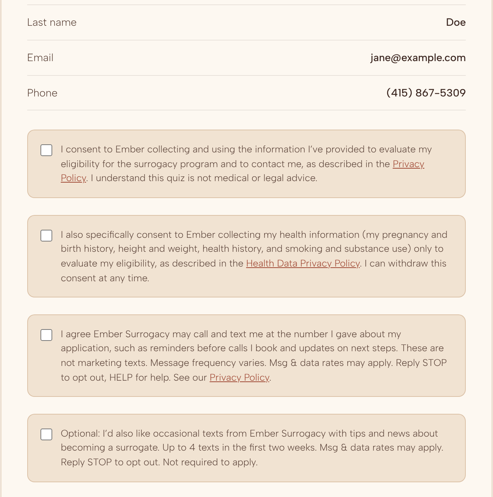
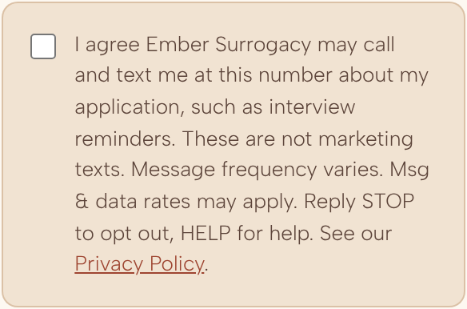

How people opt in to texts from Ember Surrogacy
Ember Surrogacy (embersurrogacy.com) only texts people who opt in on our website. This page shows the consent checkboxes exactly as they appear on our forms.
- Each checkbox is unticked by default. Texts only go to people who tick it.
- Texting consent is a separate checkbox from our other consents.
- Marketing texts have their own optional checkbox. Applying never requires ticking it.
- We save each consent and its timestamp with the application.
- Texting terms are in our Privacy Policy. We do not sell or share your SMS opt-in data or personal information with third parties for marketing purposes.
1. Surrogate eligibility quiz
Live form: embersurrogacy.com/surrogate-application/. After the eligibility questions, the applicant enters their phone number. They then see this review step, where the consent checkboxes appear right before Submit:

I agree Ember Surrogacy may call and text me at the number I gave about my application, such as reminders before calls I book and updates on next steps. These are not marketing texts. Message frequency varies. Msg & data rates may apply. Reply STOP to opt out, HELP for help. See our Privacy Policy.
Optional: I'd also like occasional texts from Ember Surrogacy with tips and news about becoming a surrogate. Up to 4 texts in the first two weeks. Msg & data rates may apply. Reply STOP to opt out. Not required to apply.
2. Careers application
Live form: embersurrogacy.com/careers/. The applicant enters their phone number at the top of the form. This checkbox appears above the Submit button:

I agree Ember Surrogacy may call and text me at this number about my application, such as interview reminders. These are not marketing texts. Message frequency varies. Msg & data rates may apply. Reply STOP to opt out, HELP for help. See our Privacy Policy.
Opting out and help
Replying STOP, UNSUBSCRIBE, END, QUIT or CANCEL stops all texts. HELP or INFO replies with how to reach us. Questions: info@embersurrogacy.com.